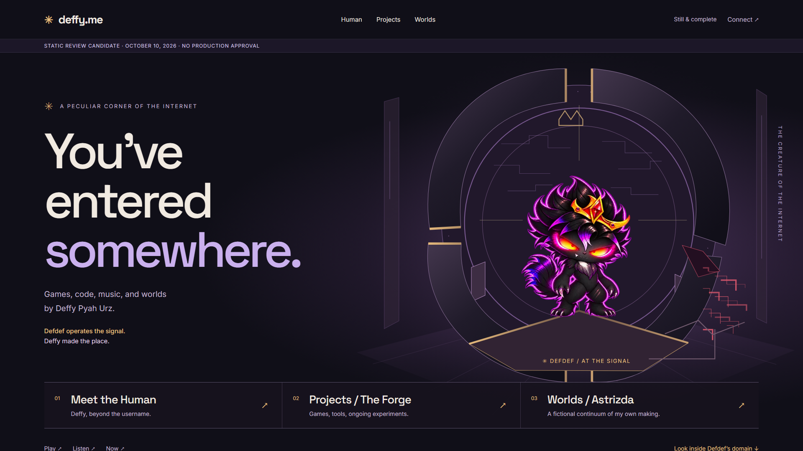
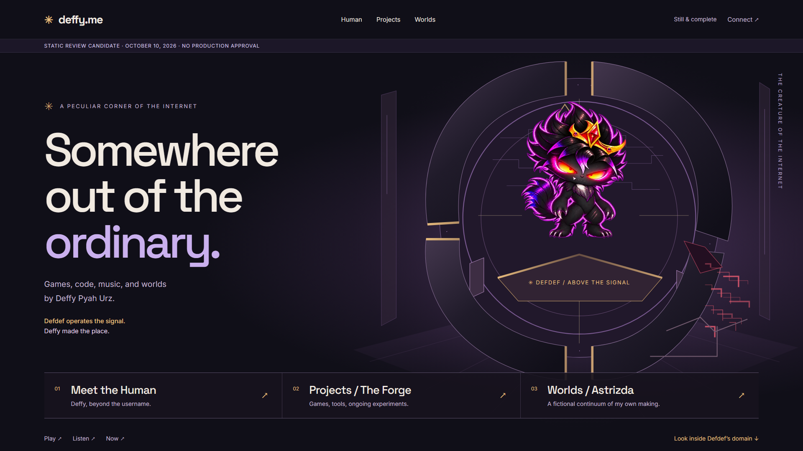
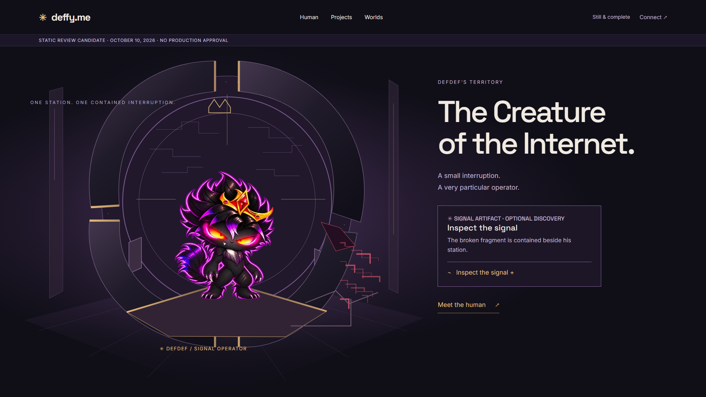
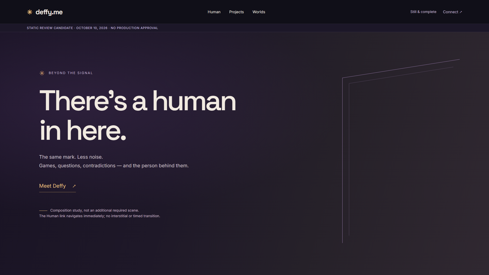
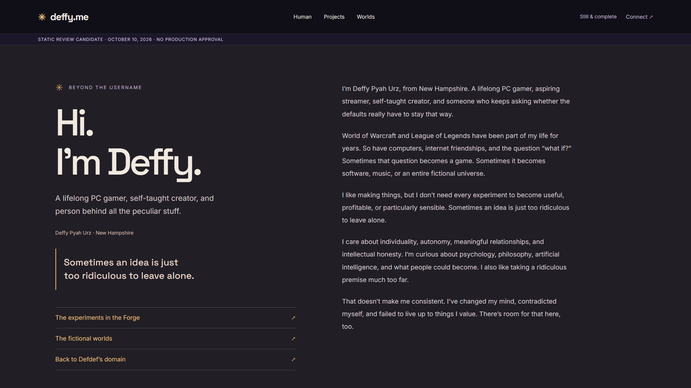
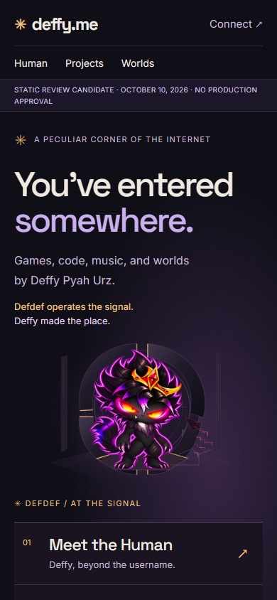
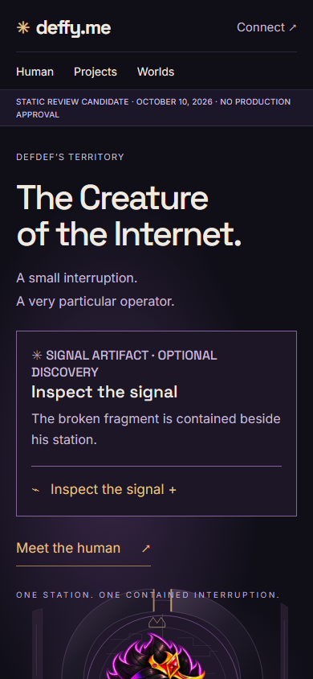
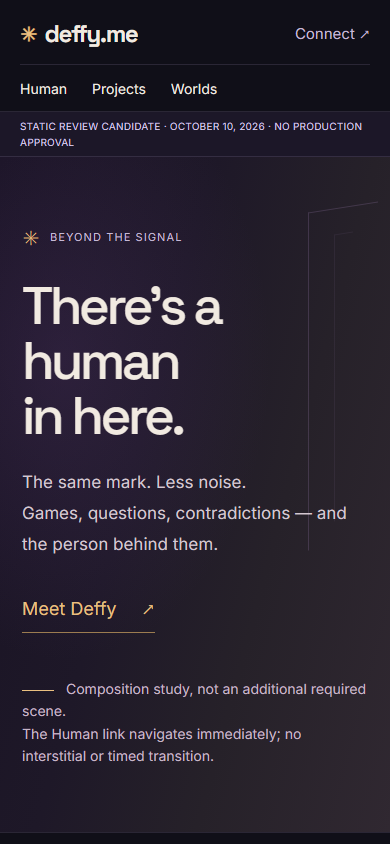
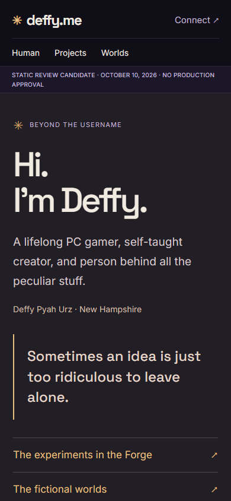
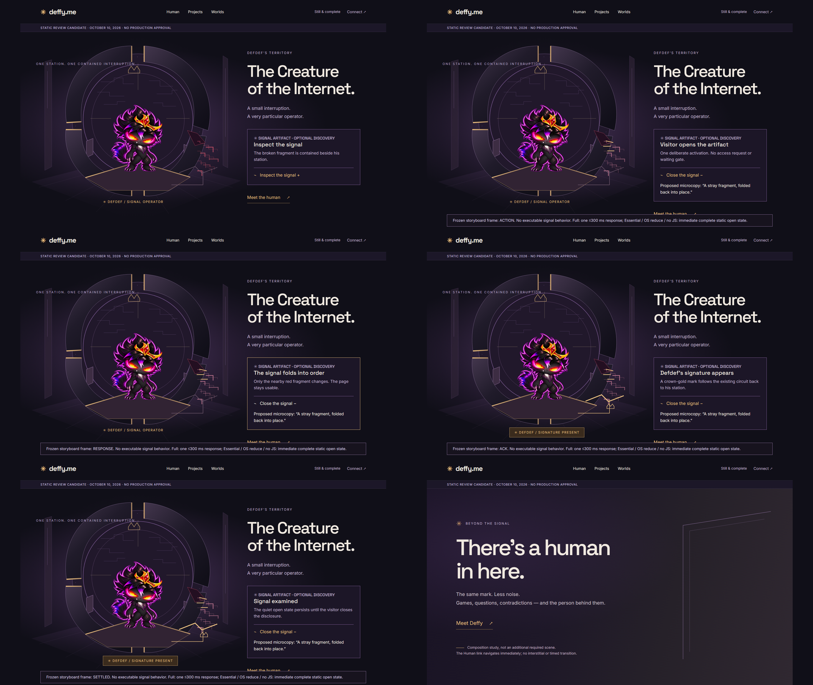

A · The Signal Aperture
Recommended: character integrated with an interrupted mechanism, three immediate routes.
1920 × 10801440 × 900Responsive plateDeffy.me · V2.1 · Phase 1
Review candidates, not approved designs. Inspect the desktop plates, then the purposeful mobile interpretations and frozen interaction sequence. G1 is preserved. No runtime scene, public route, dependency or published asset has changed.

Recommended: character integrated with an interrupted mechanism, three immediate routes.
1920 × 10801440 × 900Responsive plate
Challenge: stronger elevation, weaker visible control.
1920 × 10801440 × 900Responsive plate
Bounded station, localized red fragment, optional native signal artifact.
1920 × 10801440 × 900Responsive plate
Palette and mark continuity. Not a compulsory page or interstitial.
1920 × 10801440 × 900Responsive plate
Existing first-person prose, warm quiet surface, shared typography.
1920 × 10801440 × 900Responsive plate
arrival · 390 viewport / full page
domain-idle · 390 viewport / full page
transition · 390 viewport / full page
human · 390 viewport / full pageNo executable interaction prototype was created. These states show the proposed causal sequence and immediate static equivalent.

Concept #3 original image: unavailable in inspected project / legacy reference folders. Canonical supplied Defdef: inspected and copied unchanged. Red in his eyes/crown is canon; only the separate environmental fragment is an anomaly.